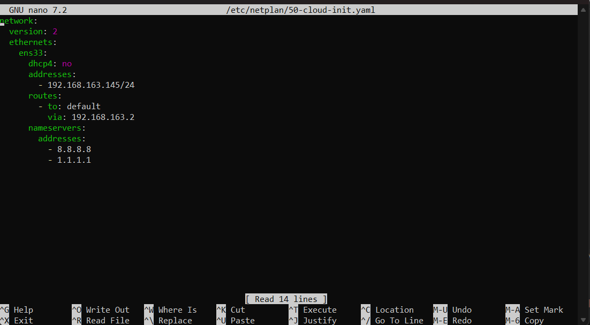

Honeypot · Détection · Analyse
Observer des activités suspectes avec Cowrie et Wazuh.
Déploiement de Kali Linux, d’un honeypot Ubuntu et d’un serveur Wazuh pour simuler des scénarios contrôlés, centraliser les journaux et analyser les événements.